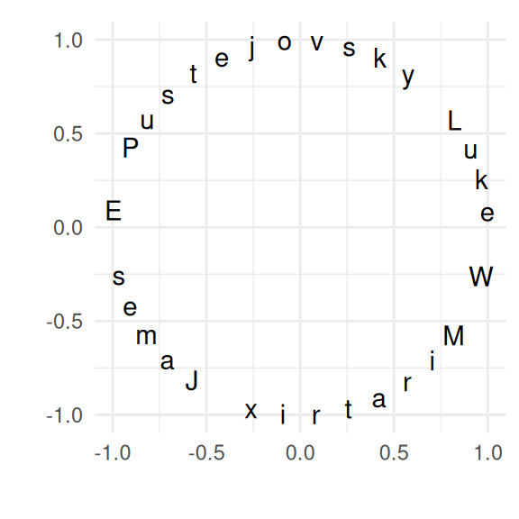

Designing Monte Carlo Simulations in R
A text on designing, implementing, and reporting on Monte Carlo simulation studies
Welcome
Monte Carlo simulations are a computational technique for investigating how well something works, or for investigating what might happen in a given circumstance. When we write a simulation, we are able to control how data are generated, which means we can know what the “right answer” is. Then, by repeatedly generating data and then applying some statistical method that data, we can assess how well a statistical method works in practice.
Monte Carlo simulations are an essential tool of inquiry for quantitative methodologists and students of statistics, useful both for small-scale or informal investigations and for formal methodological research. Despite the ubiquity of simulation work, most quantitative researchers get little formal training in the design and implementation of Monte Carlo simulations. As a result, the simulation studies presented in academic journal articles are highly variable in terms of their high-level logic, scope, programming, and presentation. Although there has long been discussion of simulation design and implementation among statisticians and methodologists, the available guidance is scattered across many different disciplines, and much of it is focused on mechanics and computing tools, rather than on principles.
In this monograph, we aim to provide an introduction to the logic and mechanics of designing simulation studies, using the R programming language. Our focus is on simulation studies for formal research purposes (i.e., as might appear in a journal article or dissertation) and for informing the design of empirical studies (e.g., power analysis). That being said, the ideas of simulation are used in many different contexts and for many different problems, and we believe the overall concepts illustrated by these “conventional” simulations readily carry over into all sorts of other types of use, even statistical inference! Our focus is on the best practices of simulation design and how to use simulation to be a more informed and effective quantitative analyst. In particular, we try to provide a guide to designing simulation studies to answer questions about statistical methodology.
Mainly, this book gives practical tools (i.e., lots of code to simply take and repurpose) along with some thoughts and guidance for writing simulations. We hope you find it to be a useful handbook to help you with your own projects, whatever they happen to be!
License
This book is licensed to you under Creative Commons Attribution-NonCommercial-NoDerivatives 4.0 International License.
The code samples in this book are licensed under Creative Commons CC0 1.0 Universal (CC0 1.0), i.e. public domain.
Acknowledgements
The material in this book was initially developed through courses that we offered at the University of Texas at Austin (James) and Harvard University (Luke) as well as from a series of workshops that we offered through the Society for Research on Educational Effectiveness in June of 2021. We are grateful for feedback, questions, and corrections we have received from many students who participated in these courses. Solutions for most of the exercises were completed and written up by Nathan Kessler, who also flagged several issues of clarity and accuracy in the text; thank you, Nathan, for your work on this book! Some parts of this book are based on memos or other writings generated for various purposes, some of which were written by others. This has been attributed throughout.